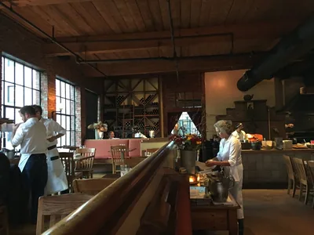

Find the gap and fill it
I went in to learn how to carry more plates. What I learned was how 150 people can eat a meal without seeing the chaos behind it.
Chaos the guests never see

I’m standing in the middle of a packed restaurant. There are couples on dates, families out for a celebratory meal, coworkers talking business. Each person is in their own world, oblivious to the chaos around them. That is how it’s meant to be.
While they enjoy dinner, sip wine and share jokes, I check that both bars have ice, that there are enough forks in Adam’s section, and that the table in the back has their appetizers.
I thought it was about plates
My first summer, I wanted to understand what made a server’s assistant good at the job. I thought the answer was service: how to deliver it better, how to carry more plates.
Be the grout
Awareness and coordination matter far more. You have to know who you’re working with, what they’re doing and what they can do, where each table is in its dinner, and how your coworkers get along. All of that runs in the back of your mind at once.
You are the grout that fills whatever gap opens up.
I learned that early, and I loved it. I felt alive filling those gaps.
New kitchen, same gaps
At Alf’s in Alta, Utah, I was a line cook and cashier. A midday rush always needed more burgers than were on the grill. The art was figuring out when it was coming and putting the patties on before anyone asked.
At 320 Guest Ranch, outside Gallatin Gateway, Montana, the gaps were between people. For a wedding party, this isn’t another routine week. It’s the most important day of their lives, and our job was to meet them at that level.
I carried the lesson into each new place. Some gaps looked familiar. Others were new. Either way, the work was to find the gap and fill it.